Questionário
O questionário é uma técnica com intuito de compreender o público-alvo e os diversos tipos de usuários que utilizam a aplicação. A fim de levantar mais requisitos que públicos específicos utilizam.
Para a preparação do questionário, levamos em consideração usuários e não usuários da aplicação. Para usuários, nossos principais interesses foram a interface, se intuitiva ou não e opinões sobre as principais funcionalidades do Deezer.
Após feedbacks sobre o questionário no primeiro ponto de controle, decidimos elaborar outra versão com condições de usuários de streaming de música e de usuários do Deezer.
| Número | Versão |
|---|---|
| Versão 1 | Questionário 1 (12/09/2019) |
| Versão 1.1 | Questionário 1.1 (Atual) (19/09/2019) |
Resultado
Data de realização: 17/09/2019 - hoje.
Reunião presencial.
Idade
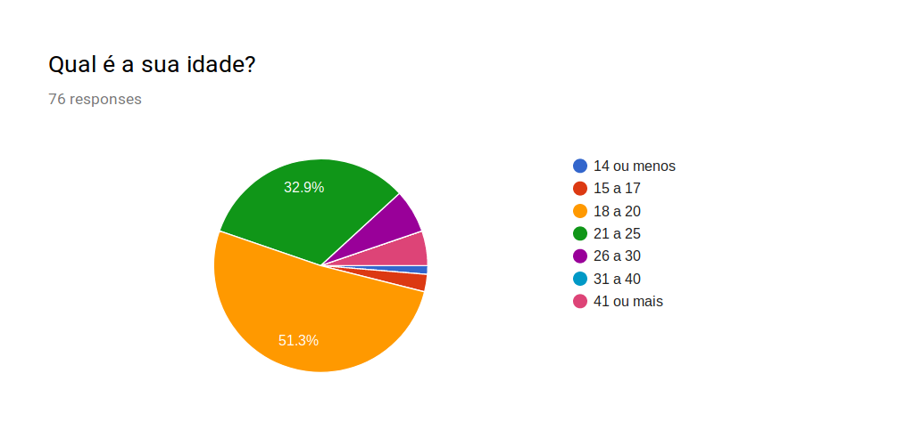
Com as respostas que obtivemos, podemos visualizar nosso público alvo. A maioria possui entre 18 e 20 anos, mas há também uma quantidade significativa de usuários entre 21 a 25. Essas taxas combinadas, somam mais de 80% do nosso público.
Frequência
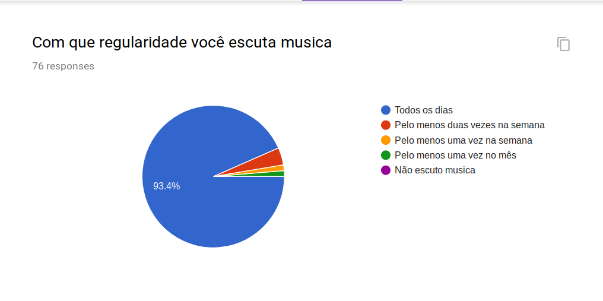
A grande maioria do nosso público ouve música todos os dias.
Streaming de Música
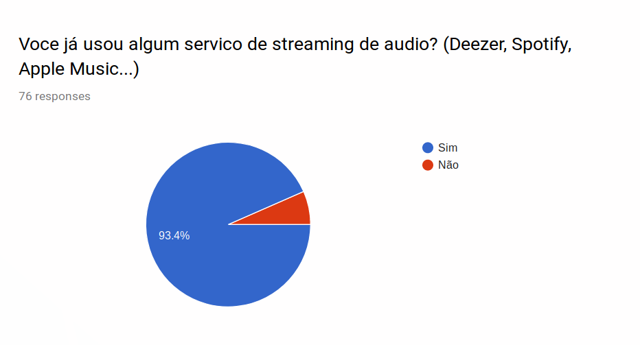
Além disso, a grande maioria também utiliza ou já utilizou algum serviço de streaming de áudio.
Essa parte do questionário, contém uma condição. As respostas apresentadas a seguir são daqueles usuários que utilizam ou já utilizaram algum serviço de streaming de áudio.
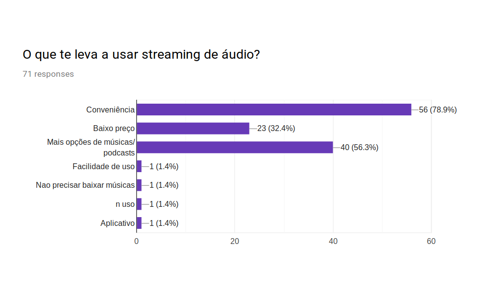
Sobre o que leva esse público a utilizar serviço de streaing de áudio, podemos notar relevância em conveniência (fácil acesso), baixo preço e mais opções de áudio disponíveis.
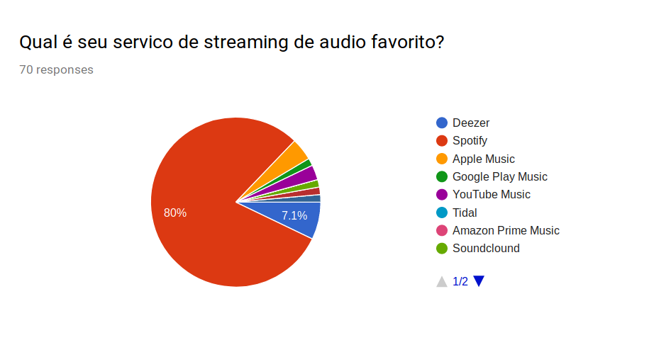
Em relação a preferência de plataforma, a grande maioria tem preferência pelo Spotify e o Deezer em segundo lugar.
Usuário Deezer
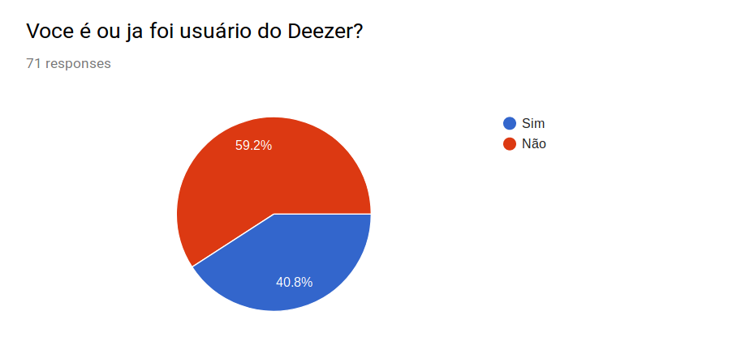
Nosso público, em sua maioria, já foi ou são usuários Deezer.
A partir desse momento, o questionário conta com uma condição. As respostas posteriores são apenas para aqueles que são ou já foram usuários do Deezer.
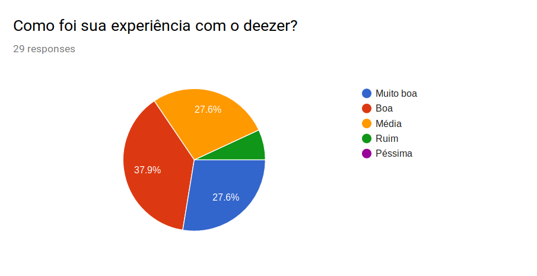
É possível notar, que em sua maioria, o público alvo descreve a experiência como "Boa" ou "Muito boa". Ainda há uma grande taxa de experiência média.
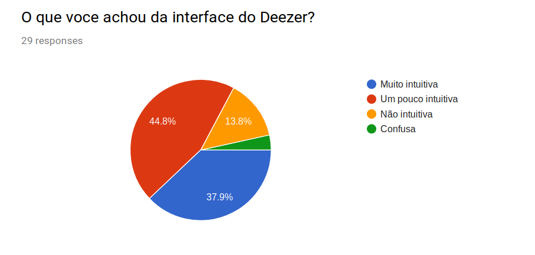
Em relação a interface, obtivemos mais respostas para muito intuitiva e um pouco intuitiva.
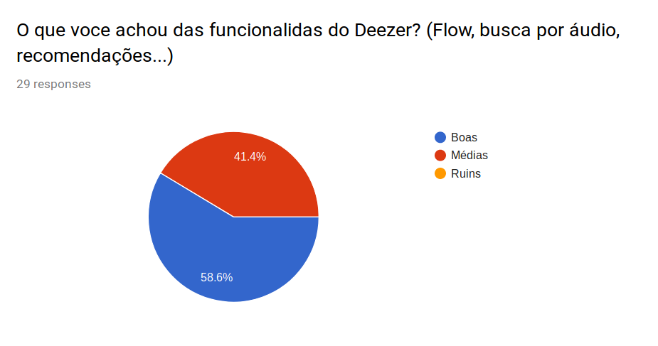
Sobre as funcionalidades diferenciais da aplicação, houve maioria para boas e outra parte para média.
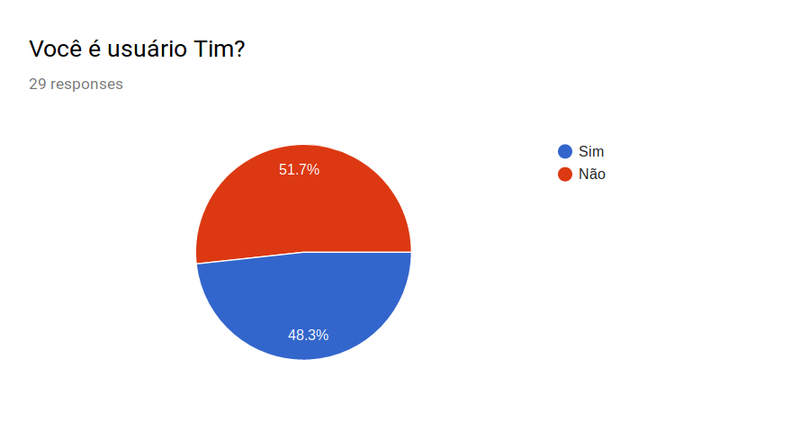
O Deezer possui uma parceria com a Tim, em que usuários da Tim podem ser usuários do Deezer Premium gratuitamente. Por curiosidade, perguntamos ao nosso público se eles são usuários Tim. Vimos que em nossa amostra, houve maioria para não usuário Tim.
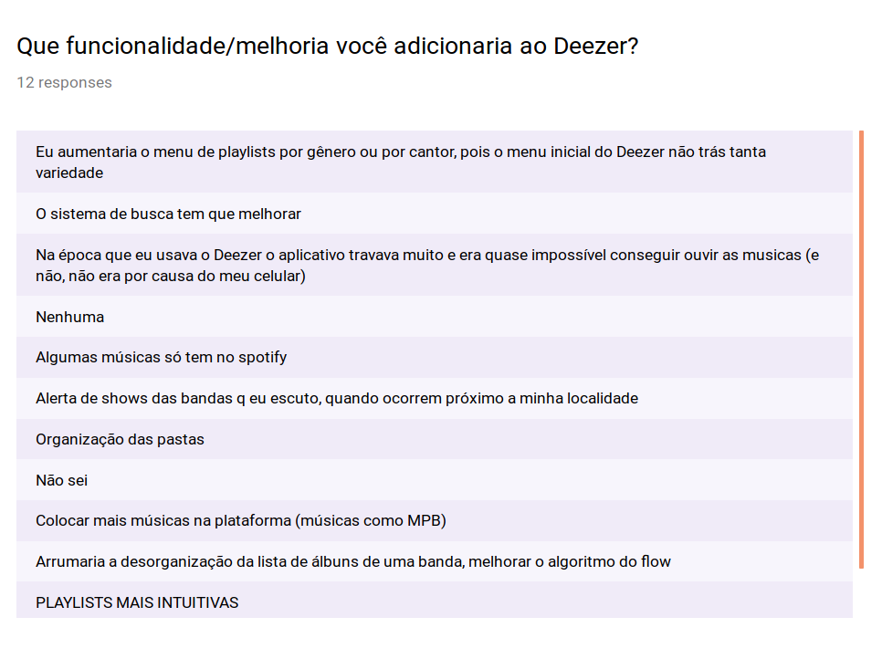
E por fim, obtivemos 12 respostas a respeito de melhorias/funcionalidades que adicionariam ao Deezer.